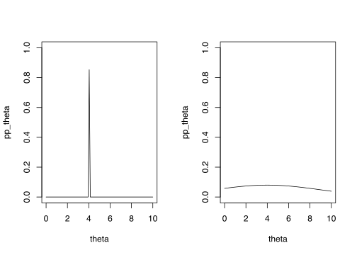
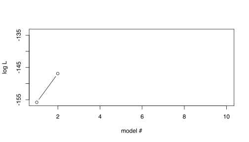
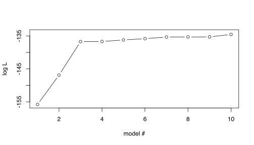
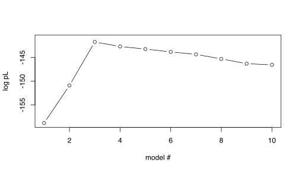
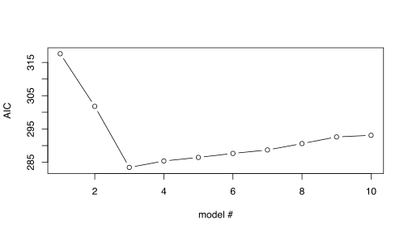
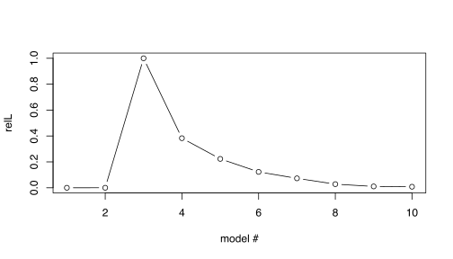
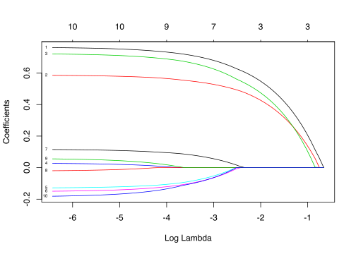
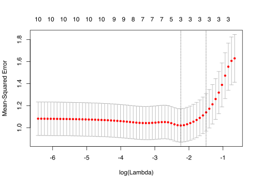

Tutorial: Basic Statistics | Model estimation
RaukR 2019 • Advanced R for Bioinformatics
Bengt Sennblad

1 Parameter estimation of statistical models
Lecture notes
Consider a generative model, with parameters \(\theta\), for how some data \(D\). We would like to test if \(\theta\) are good parameters or if some other parameters are better. Given the model, we can compute \[Pr[D| \theta],\] i.e., the probability that the model with parameters \(\theta\) generates \(D\).
However, we would be more interested in how good the model with parameters \(\theta\) for our data. In other words, what we would actually like to compute is \[Pr[\theta|D].\] This would allow us to select optimal parameter estimates and, importantly, to evaluate how good they are compared to other parameters.
Getting from \(Pr[D| \theta]\) to \(Pr[\theta|D]\) can be solved in different ways, which has given rise to two major philosofical branches of statistics:
- Bayesian statistics and
- Frequentist statistics
1.1 Bayesian approach
Lecture notes
Bayes’ theorem (Thomas Bayes, 1702-1761) provides a way to obtain the requested \(P[\theta|X,Y]\)
\[Pr[\theta|D] = \frac{Pr[D| \theta]Pr[\theta]}{Pr[D]}\] Posterior probability
\(Pr[\theta|D],\) the probability, computed posterior to analysis, of the parameters \(\theta\) conditioned on the observed data, i.e, our requested probability.
An important characteristic of Bayesian statistics is that the focus is not on point estimates, but on the posterior probability distribution over the parameter space of \(\theta\), which provides a measure of uncertainty (probabilities) in comparison to other values.

Prior probability of \(\theta\)
\(Pr[\theta]\) is the prior probability of \(\theta\) and should according to Bayesian statistics reflect what we know (or believe to know) about how close \(\theta\) is to the true parameters. We can use information from previous studies or we can assign a uninformative prior, e.g., \(Pr[\theta]\) follows a uniform distribution for all \(\theta\) in the interval \([a,b]\).
It can be shown that the effect of the prior on the posterior probsbiity is largest when the observed data is small. With larger sample sizes, the posterior probability will eventually just depend on \(Pr[D|\theta]\).
Marginal Probability of \(D\)
\(Pr[D]=\int_{\theta}Pr[D| \theta]Pr[\theta]\) is the probability of \(D\) regardless of \(\theta\). This can often be difficult difficult to calculate and, for this reason, Bayesian models are often designed so that this can be calculated analystically or some approximation approach, such as Markov chain Monte Carlo (MCMC) is used.
Extra reading
Probabilistic algebra
A conditional probability \(Pr[A|B]\) is the probability that \(A\) happens if we know that \(B\) has happened. To obtain the probability that both \(A\) and \(B\) happens we need to first take the probability that \(B\) happens and then multiply it with the conditional probability that \(A\) hapens given \(B\), i.e.,:
\[Pr[A,B] = Pr[A|B] Pr[B].\]
From this follows the reverse operation
\[\frac{Pr[A,B]}{Pr[B]} = Pr{A|B}\] Notice that this also works if we have more than one condition: \(Pr[A|B,C] * Pr[B] = Pr[A,B|C].\)
What happens in Bayes rule is that we first, in the numerator, perform \(Pr[B|A]*Pr[A] = Pr[A,B]\) and then divide this with the denominator \(\frac{Pr[A,B]}{Pr[B]} = Pr[A|B]\).
1.2 Likelihood – The frequentist approach
Lecture notes
Likelihood (Introduced by Fisher, 1925, formalized by Edwards, 1972) builds on the intuition that if \(\theta\) is close to the ‘truth’, then \(Pr[Y| X, \theta]\) will be higher than for wrong \(\theta\). We should therefore select the \(\theta\) that maximizes \(Pr[Y| X, \theta]\); this is called maximum likelihood estimation (MLE) of \(\theta\).
Since statistical model contain an element of randomness, the reasoning above might not always be correct for any single obeservation. However, if we sum over a large number of observations it will be true on average. Hence the need for datasets that are large enough.
To formalize this intuition, Edwards (1972) defined the likelihood of model parameters being true given observed data as
\[L[\theta|D] \propto Pr[D| \theta]\]
Extra Reading
Notice that this notation is not uncommonly mixed up, so you might also see the notation \(L[Y|X,\theta]\) for the likelihood.
Similarly \(\propto Pr[Y|X, \theta]\) is often referred to as the likelihood function.
The proportionality (indicated by ‘\(\propto\)’) means there are some unknown constant factor, \(k\), such that \(L[\theta|Y,X] = k Pr[Y|X, \theta]\). However, the factor \(k\) is assumed to be constant over \(\theta\)s and over models.
Using a Bayesian perspective, we can see that the proportionality constant \(k = \frac{Pr[\theta]}{Pr[D]}\), and that Likelihood would correspond to assuming a uniform prior over all possible values of \(\theta\).
In practice, the proportionality is ignored and we set
\[L[\theta|Y,X] = Pr[Y|X, \theta]\]
Extra Reading
When the likelihood of two \(\theta\)s (or models) are compared this is almost always done as a likelihood ratio,
\[\frac{L[\theta_1|Y,X]}{L[\theta_0|Y,X]} = \frac{k Pr[Y|X, \theta_1]}{ k Pr[Y|X, \theta_0]} =\frac{Pr[Y|X, \theta_1]}{ Pr[Y|X, \theta_0]}\]
which means that the factor \(k\) disappears. Hence the factor \(k\) is always ignored. Likelihood ratios is the basis of most model comparison statistics, e.g., the Wald test, the Score test, regularization…
In maximum likelihood estimation of some parameters \(\theta\), one simply selects the estimates \(\widehat\theta\) that gives the highest likelihood, \(max_{\theta}L[\theta|X,Y] = L[\widehat\theta|X,Y]\). In many applications of likelihood and maximum likelihood, it is practical to instead use the logarithm of the likelihood, the logLikelihood, \(\log L[\theta_1|Y,X]\).
Extra Reading
As mentioned above, the logarithm of the likelihood, the logLikelihood, \(\log L[\theta_1|Y,X]\), or sometimes the negative logLikelihood, \(-\log L[\theta_1|Y,X]\), is often used. Notice, that
- The \(\theta\) estimates that maximizes \(\log L[\theta|Y,X]\) also maximizes \(L[\theta|Y,X]\)
- The \(\theta\) estimates that minimizes \(-\log L[\theta|Y,X]\) maximizes \(L[\theta|Y,X]\)
- A likelihood ratio corresponds to a logLikelihood difference, \[\log\left(\frac{L[\theta_1|Y,X]}{L[\theta_0|Y,X]}\right) = \frac{\log L[\theta_1|Y,X]}{\log L[\theta_0|Y,X]} = \log L[\theta_1|Y,X] - \log L[\theta_0|Y,X]\].
Likelihood and maximum likelihood estimation are central concepts in frequentist statistics. Many statistical tests and methods uses or is based on the concept of maximum likelihood.
In general, full-on likelihood computation and maximum likelihood estimation is relatively slow, so alternative and faster methods has been developed. One example is the use ordinary least squares OLS for linear models; it can be shown that the likelihood can be expressed as a function of the residual sum of squares (RSS) and that maximum likelihood estimates of \(\beta\) is exactly the same as those of the OLS (which minimizes RSS.
NB! This is a special case for linear models and are not generally true for other models. For example, logistic regression is typically fitted using maximizing the likelihood
Extra Reading
Linear models is a special case with some nice properties when it comes to likelihood. Consider a simple linear regression model,
\[ y = \beta x + \epsilon, \]
where the residuals \(\epsilon\sim N(0,\sigma^2)\).
It turns out that the likelihood estimates of both \(\beta\) and \(\sigma^2\) are functions of the RSS of the residuals, so that the likelihood can be approximated by
\[ \log L[\beta, \sigma^2|Y,X] \approx -\frac{N}{2} \log RSS\]
The likelihood for given \(\beta\) and \(\sigma^2\), given observed data \(Y\) and \(X\) is given by
\[ L[\beta, \sigma^2|Y,X] = \prod_i pdf_{Normal}(y_i, \mu=\beta x_i, \sigma^2=\sigma^2) = \prod_i \frac{1}{\sqrt{2\pi \sigma^2}}e^{-\frac{(y_i-\beta x_i)^2}{2\sigma^"}} \]
where \(pdf_{Normal}\) denotes the probability distribution function for the Normal distribution. If we work with the logLIkelihood instead, we get
\[\begin{eqnarray*} \log L[\beta, \sigma^2|Y,X] &=& \sum_{i=1}^N \log\left(\frac{1}{\sqrt{2\pi \sigma^2}}e^{-\frac{(y_i-\beta x_i)^2}{2\sigma^2}}\right)\\ &=& \sum_{i=1}^N \log \left(\frac{1}{\sqrt{2\pi \sigma^2}}\right) -\frac{(y_i-\beta x_i)^2}{2\sigma^2} \\ &=& N\log \left(2\pi \sigma^2\right)^{-1/2} -\frac{\sum_{i=1}^N (y_i-\beta x_i)^2}{2\sigma^2} \\ &=& -\frac{N}{2}\log \left(2\pi \sigma^2\right) -\frac{RSS}{2\sigma^2} \end{eqnarray*}\]
We see here that minimizing \(RSS\) (as in OLS) will maximize the logLikelihood, regardless of the value of \(\sigma^2\). Moreover, it turns out that also \(\sigma^2\) can be estimated fairly well by \(RSS/N\). Hence, we get
\[\begin{eqnarray*} \log L[\beta, \sigma^2|Y,X] &=& -\frac{N}{2}\log \left(\frac{2\pi RSS}{N}\right) -\frac{N}{2}\frac{RSS}{RSS}\\ &=& -\frac{N}{2}\log RSS + \frac{N}{2}\log \frac{2\pi}{N} -\frac{N}{2}\\ &=& -\frac{N}{2}\log RSS + C \end{eqnarray*}\] where \(C=\frac{N}{2}\left(\log \frac{2\pi}{N} -1\right)\) is a constant that is usually ignored (in likelihood ratios, which is equivalent to log likelihoods differences, it will disappear).
1.3 Bayesians vs frequentists
Lecture notes
There is often described a severe controversy between Bayesians and frequentists. However, this controversy represents the extreme hardcore Bayesians and frequentists.
In reality, there is a large gray-zone where frequentists and Bayesians meet and socialize:
- Bayesian models can be viewed as a type of the hierarchical models often used by frequentists
- Frequentist bootstrap analysis is often used to estimate uncertainty of point estimates in relation to alternatives, as is done in Bayesian statistics
- The Bayes factor is a Bayesian version of the likelihood ratio
- Bayesian posterior intervals corresponds to frequentist confidence intervals (Note however, that there are no Bayesian significance test)
- etc.
Most practical statisticians use the tool that is adequate for the problem at hand, whether it is Bayesian or frequentist.
2 Overfitting
We will now look at a general problem in statistical modeling that can be visualized quite well with Likelihoods. We will later look at some solutions to this problem.
2.1 Overfitting | Example data
First, you need some test data to play around with. For simplicity and convenience, you will simulate a toy data from a linear model and use this in the exercises. The advantage for us using simulated data is that we know the ‘truth’, i.e., how the data was simulated and we therefore have oracle knowledge about the true parameter values, e.g., for \(\beta\).
2.1.1 Task | simulation of example data
- The data should comprise 100 samples.
- First generate 10 variables \((x_1,x_2,\ldots, x_{0})\) from a uniform distribution (use the function
runif) and store them in a Matrix \(X\). - Use an intercept \(\beta_0=3\)
- Generate effect sizes \(\beta_1, \beta_2, \beta_3\) from a Uniform distribution in the interval \((0.5, 1.0)\) for the 3 first \(X\) variable (use the function
runif); record the ‘true’ effect sizes for reference. - Finally generate outcome variable \(Y\) using a linear model \(Y = \beta_0 + \beta_1 x_i + \beta_2 x_2 + \beta_3 x_3 + \epsilon\), with \(\epsilon\sim N(0,\sigma^2=1)\) (i.e., the residuals are drawn from a Normal distribution with mean=0 and standard deviation=1, Tip: use the R function
rnorm).
# To obtain exactly the same result as in the demo, set seed to 85
set.seed(85)N=100 # number of samples
P=10 # number of variables
# Draw variables, x_{i,1},...,x_{i,P} for all N individuals, from a uniform distribution in interval (0,1) (this is the default interval for runif)
X=matrix(round(runif(N*(P+1),min=0, max=2)), nrow=N, ncol=P)
# generate a y variable from a multivarite lm of 3 first X variables only
# intercept
b0=3
# effect sizes for first three variables
b=c(runif(3, min=0.5, max=1.0))
# generate y
Y = b0 + X[,1] * b[1] + X[,2] * b[2] + X[,3] * b[3] + rnorm(N)2.2 Overfitting | Model comparison
Now consider the following two models for our data
\[\begin{eqnarray} y & \sim & \beta_0 + \beta_1 x_1 & (1) \\ y & \sim & \beta_0 + \beta_1 x_1 + \beta_2 x_2 & (2) \end{eqnarray}\]
What are the max Likelihood estimates of the two models? (we can use the R function logLik in the stats package)
2.2.1 Task | plot two likelihoods
- Create
lmmodels for the two models, and - store the likelihood (use
logLik) in a vector - plot the likelihoods
require(stats)
ll= vector()
for(i in seq(1,2)){
Xi=X[,seq(1,i)]
ll[i] <- logLik(lm(Y~Xi))
}
# plot likelihoods for models with 1 and 2 vaiables
plot(ll, ylab="log L", xlab="model #", type = "b", xlim=c(1,P), ylim=c(floor(min(ll)),ceiling(max(ll))))
# xlim and ylim not really necessary here, but I can reuse the plot statement below, so the plots look similar Show result

… 2 variables are clearly better than 1 variable – What if we add more variables?
2.2.2 Task | plot all likelihoods
- Now repeat this for the sequence of models obtained by creating the next model by simply adding the next \(X\) variable in order.
# compute loglikelihood (ll) for all models including variables
# 1-i, for i <= P; store results in vector ll
ll= vector()
for(i in seq(1,P)){
Xi=X[,seq(1,i)]
ll[i] <- logLik(lm(Y~Xi))
}
# plot ll for all models
plot(ll, ylab="log L", xlab="model #", type = "b", xlim=c(1,P), ylim=c(floor(min(ll)),ceiling(max(ll)))) Show result

2.2.2.1 Think about:
How does the Likelihood behave as more variables are added?
Which is the maximum likelihood model? Is this correct given our oracle knowledge?
What could be the problem with this behaviour? How would we like it to behave?
How can we obtain the desired behaviour?
Some possible answers
Some possible answers
Nested models
Model (1) can be described as a special case of Model (2) with the constraints on \(\beta_2=0\)
Therefore Model (2) will always have equal or better ML than Model (1)
Overfitting
- Using our oracle knowledge, we know that the simulated data was generated from the 3 first variables
- thus, the subsequent variables increase ML by modeling noise in data
This is difficult to detect by just looking at the likelihoods
- Solutions
- Seek the simplest model that is “good enough” -> Regularization/Bayesian
Extra Reading
Model comparison | Likelihood ratio test
For nested models \(-2 \max LRT\) is \(\chi^2(d)\)-distributed, with \(d=\) the difference in free params in the two models.
| Compared models | logL 1st model | logL 2nd model | logLR | P-value | Sign at 0.05 |
|---|---|---|---|---|---|
| 1 vs 2 variables | -155.80 | -146.90 | -8.9 | 2.45e-05 | yes |
| 2 vs 3 variables | -146.90 | -136.73 | -10.17 | 6.48e-06 | yes |
| 3 vs 4 variables | -136.73 | -136.69 | -0.04215 | 0.772 | no |
| 4 vs 5 variables | -136.69 | -136.23 | -0.4601 | 0.337 | no |
| 5 vs 6 variables | -136.23 | -135.83 | -0.4016 | 0.37 | no |
| 6 vs 7 variables | -135.83 | -135.35 | -0.4803 | 0.327 | no |
| 7 vs 8 variables | -135.35 | -135.31 | -0.04266 | 0.77 | no |
| 8 vs 9 variables | -135.31 | -135.30 | -0.0002981 | 0.981 | no |
| 9 vs 10 variables | -135.30 | -134.55 | -0.7536 | 0.22 | no |
In our simple test case, the LRT also succeed in picking the correct model. It should be noted that certain issues, such as lnkage disequiibriium, may cause problems for LRT (the example is not optimized to show this).
3 Regularization
Lecture notes
Regularization is a concept that adds auxiliary criteria, so-called regularization terms, to probabilistic models. This is called regularized likelihood models or penalized likelihood models. Typically, the regularization term is a function of parameters \(\beta\):
\[\log rL[\beta | X, Y] = \log Pr[Y | X, \beta] - f(\beta),\]
A very simple regularized likelihood model uses \(f(\beta) = \#\beta = \#X\), that is the number of \(X\) variables.
\[\log rL[{\beta} | X, Y] = \log Pr[Y | X, {\beta}] - \#X, \]
Applying this rL to our example data, solves the overfitting problem.
# compute loglikelihood (ll) for all models including 1-P variables
pl= vector()
for(i in seq(1,P)){
xi=X[,seq(1,i)]
xi=cbind(rep(1,N), xi)
fit = lm(Y~xi)
# To make the code simple, we forestall next step and use the AIC function here
# AIC= -2(pl) so convert back
pl[i] = -AIC(fit)/2
}
# plot ll of all models
plot(pl, xlim=c(1,P), ylim=c(floor(min(pl)),ceiling(max(pl))),ylab="log pL", xlab="model #", type = "b")
3.1 Regularization | Bayesian interpretation
Lecture notes
Regularization is a canonical example where Bayesian and frequentist statistics meet.
The standard way of writing a regularized likelihood is using the logLikelihood, but what if ‘de-log’ it:
\[\begin{eqnarray*} \log rL[\beta | X, Y] &=& \log Pr[Y | X, \beta] - f(\beta) \\ \Downarrow\\ rL[\beta | X, Y] &=& Pr[Y | X, \beta] * e^{- f(\beta)} \end{eqnarray*}\]
This looks suspiciously like a un-normalized posterior probability, with the prior \(Pr[\beta]=e^{-f(\beta)}.\)
As we will see examples of, most regularization techniques has a Bayesian interpretation.
In fact, a standard solution overfitting and, more generally, over-parameterization, i.e., problems where the likelihood function may not have a unique maximmum, is to include prior information, either as Bayesian priors or regularization terms to limit the parameter space.
3.2 Regularization | AIC and model testing
Lecture notes
Coming from a information theory base, Hirotugu Akaike came up with a very similar approach for the overfitting problem.
The Akaike information criterion (AIC), for a model \(m\) with variables \(X\), is defined as
\[AIC_m = 2\# X - 2\log \max L[{\beta}|X,Y]\]
We see that \(AIC_m = -2 \left(\log \max L[{\beta}|X,Y] - \#X\right)\), i.e., \(-2\) times the the simple \(\log rL\), we just looked at in our first regularization example.
Extra Reading
The difference in \(AIC\) between two models is claimed to estimate the information lost by selecting the worse model.
Sometimes, the relative likelihood for model \(m\) is used, which is \[relL = e^\frac{ AIC_{min} - AIC_{m} }{2}\] where \(AIC_{min}\) is the minimum AIC among a set of compared models
Extra Reading
\(relL\) can be interpreted as proportional to the probability that the model \(m\) minimizes the information loss.
- Notice that
\[\log relL = \frac{\#X_m }{\#X_{min}}\log\frac{\max L[{\beta}_{m}|X_m,Y]}{\max L[{\beta}_{min}|X_{min},Y]}\] we see that \(rL\) can be viewed as a likelihood ratio weighted by the ratio of number of \(X\) variables (or as a Bayes factor)
- However, AIC are not limited to nested models
3.2.1 Task | AIC analysis
A typical strategy is to select the model, \(m\) with \(AIC_m=AIC_{min}\) and then evaluate how much better it is than the other candidate models, e.g., using the \(relL\).
- Apply this AIC strategy applied to our example data using the R funcion
AIC create a table with the AIC and the \(relL\) for the set of models comprising \(\{X_1, .\ldots, X_i\} \textrm{ for } i \in [1, \ldots, 10]\); indicate also if a model is the minimum AIC model.
require(stats)
require(dplyr) # used for nice table formatting
require(kableExtra) # used for nice table formatting
mprev <- lm(Y ~ X[,1]) # current miminimum AIC model
# dummyentry to be replaced
aic=data.frame(models=0, aic=0, isAICmin="-")
for(i in seq(1,P)){
m <- lm(Y ~ X[,seq(1,i)])
fit = AIC(mprev,m)
mprev = m
if(i==2){ #include also the first model
aic[i-1,] = list(paste0(i-1," variable"), signif(fit$AIC[1],5), "-")
}
aic[i,] = list(paste0(i," variables"), signif(fit$AIC[2],5), "-")
}
minaic=min(aic$aic)
aic$rl=format(exp((minaic-aic$aic)/2), digits=4)
aic$isAICmin = ifelse(aic$aic==minaic,"Yes","-")
kable(aic, format='html', row.names=F, col.names=c("Compared models","AIC","Minimum AIC","rL"),digits=30,format.args=list(snsmall=0)) %>% kable_styling( font_size = 14)Show result
| Compared models | AIC | Minimum AIC | rL |
|---|---|---|---|
| 1 variable | 317.61 |
|
3.841e-08 |
| 2 variables | 301.80 |
|
1.041e-04 |
| 3 variables | 283.46 | Yes | 1.000e+00 |
| 4 variables | 285.38 |
|
3.829e-01 |
| 5 variables | 286.46 |
|
2.231e-01 |
| 6 variables | 287.66 |
|
1.225e-01 |
| 7 variables | 288.70 |
|
7.280e-02 |
| 8 variables | 290.61 |
|
2.802e-02 |
| 9 variables | 292.61 |
|
1.031e-02 |
| 10 variables | 293.10 |
|
8.067e-03 |
- Try to plot the \(AIC\) and the \(reL\) with the different models on the \(X\)-axis
require(stats)
# plot AIC of all models
plot(aic$aic, xlim=c(1,P), ylim=c(floor(min(aic$aic)),ceiling(max(aic$aic))),ylab="AIC", xlab="model #", type = "b")
# plot relL of all models
plot(aic$rl, xlim=c(1,P), ylab="relL", xlab="model #", type = "b") Show result

3.2.1.1 Think about:
- Which is the best model? Is this correct compared to our oracle knowledge?
- How good is it compared to the others?
- Can you see a drawback in our model testing approach above? If so, how can we solve that?
Some possible answers
Some possible answers
- We see that the best model is the one with the 3 first X-variables (in line with our oracle knowledge) and that the second best model (with the first 2 X-variabels) is \(\approx70\%\) worse.
Extra Reading
- Sometimes it is desirable to compute a significance for rejecting a model in favour of another model. A NULL distribution for the \(relL\) statistic is usally obtained through simulation, e.g., using parameteric bootstrapping.
- Now, I this case we happened to know that the first 3 variables was the right one, so the order we choose to include them was correct. However, in the general case, we do not know this. How solve this?
- Best subset method; involves testing all possible subsets, which is computationally time-consuming and dometimes unfeasible
- Lasso
3.3 Regularization | LASSO and Feature selection
Lecture notes
LASSO stands for Least absolute shrinkage and selection operator (“shrinkage” is another common term for regularization) and is a method for selecting variables to include in a multivariate model.
Classical LASSO builds on RSS of a linear regression model \(Y \sim X{\beta}\) with regularization
Extra Reading
Extensions to glms exists, but then using a regularized likelihood expression
The regularization term \(f(\beta) = \lambda\sum_{\beta_i\in\beta} |\beta_i-0|= \lambda\sum_{\beta_i\in\beta} |\beta_i|\)
The \(\lambda\) parameter sets a limit on the estimation of \(\beta\).
Lasso is traditionally described as RSS with an auxiliary criterion/constraint:
\[min_{{\beta}}\left\{RSS\right\} + \lambda\sum_{\beta_i\in\beta} |\beta_i|.\] Lasso can also be viewed as a Bayesian posterior probability, with a LaPlacean prior on \(\beta\): \(\beta_j ∼ LaPlace(0, 1/\lambda)\)
Extra Reading
Often the regularization term is expressed in terms of the \(\ell_1-norm\), which can be viewed simply a short-hand notation, e.g., the \(\ell_1-norm\) of \(\beta\) is
\[ ||\beta||_1 = \sum_{\beta_i\in\beta} |\beta_i|\]
There is also a \(\ell_2-norm\): \[ ||\beta||_2 = \sqrt{\sum_{\beta_i\in{\beta}} \beta_i^2}\] which is used, e.g., in ridge regression.
We note, BTW, that you already have been working with an \(\ell_2-norm\): since \(RSS = ||Y-X\beta||_2^2\) is simply the square of the \(\ell_2\) norm of the residuals.
Another common notation for LASSO is using the norm notstion:
- You might often see the notation \[min_{{\beta}}\left\{RSS\right\} \textrm{ subject to } ||{\beta}||_1 <= t\] where \(t\) is related to \(\lambda\).
The optimal values of \(\beta\) are then estimated, using some algorithm (lars or coordinate descent).
Extra Reading
The Coordinate descent algorithm is used in the R package glmnet:
- Over a grid of \(\lambda\in [0, \infty]\), do
- Start with all \(\beta=0\)
- until convergence repeat for each \(\beta_i\)
- while keeping all other \(\beta\) fixed and \(\beta_i=0\), compute partial residuals
- estimate \(\beta_i\) by RSS on the partial residuals
- update $_i using the RSS estimate and \(\lambda\).
Extra Reading
Alternatives to LASSO, differing mainly in the auxiliary criterion
- Ridge regression which uses a \(\ell_2\) norm
- Elastic-net, which uses a mixed model combination of the \(\ell_1\) norm and the \(\ell_2\) norm.
3.3.1 Task | Lasso using the glmnet R-package
- Use function
glmnetto perform LASSO analysis on our example data; relevant arguments of the function:- linear regression (
family='gaussian'= default) - LASSO (
alpha=1= default) - standardization
- The variables Y and X must be centered and standardized to ensure that all variables are given equal weight in the model selection.
- standardization of \(X\) to unit variance in
glmnetis obtained by setting the argumentstandardize=TRUEwhich is the default - the values of \(Y\) is always standardized (?) for
family=gaussian(LASSO) - and the coefficients are back-standardized before reported
- linear regression (
Extra Reading
Standardization in glmnet:
\(x' = \frac{x-\bar{x}}{1/\sqrt{N}||X-\bar{x}||_2}\)
require(glmnet)
# run lasso (alpha=1) for linear model (family=gaussian)
fit = glmnet(X,Y, family="gaussian", alpha=1, standardize=T)- A graphical way to view the result is to
plotthe paths of \(\beta\) for increasing vaules of \(\lambda\).
plot(fit, xvar="lambda",label=T) Show result

3.3.1.1 Think about
- In which order are variables included (i.e., their \(\beta\) becomes non-zero?
- In which direction is the effect
- Which lambda should we select?
- Given our oracle knowledge, where would an appropriate \(\lambda\) be?
- Can we use that?
Some possible answers
Some possible answers
- The order in the above plot appears to be \((1,2,3,7,6,5,10,9,4,8)\) (may vary depending on the simulation)
- \(\beta_i > 0, i\in \{1,2,3,4,7,9\}\), while \(\beta_i<0, i\in \{5,6,8,10\}\)
- Given oracle knowledge, the correct \(\lambda\) appears lie somewhere in the interval \([\approx \exp(-0.9), \approx\exp(-2.25)]\)
- In the normal case, we do not have oracle knowledge.
3.4 Cross-validation
Lecture notes
The LASSO model will be different depending on how we set \(\lambda\). A problem is to decide the optimal \(\lambda\) to use.
- \(\lambda\) too high: risk of missing relevant variables
- \(\lambda\) too low: risk of overfitting
glmnet addresses this using \(k\)-fold cross-validation – what is that?
3.4.1 Cross-validation | How to test for overfitting
Lecture notes
The ultimate way of testing an estimated model (with parameters) is to apply it to new data and evaluate how well it performs, e.g., by measuring the mean squared error, \(MSE\) (\(=RSS/N\)). Naturally, we want to minimize \(MSE\), i.e., the error of the model. In our LASSO application, this means that we want to select the \(\lambda\) that minimizes the \(MSE\)
In cross validation, this approach is emulated by partioning the data at hand into a training and a validation data set. The model parameters are estimated (‘trained’) on the the training data and the validated on the test data.
By chance, this may fail if the partitioning is ‘non-representative’. A solution is to repeat the cross-validation procedure with another partioning.
In \(k\)-fold cross validation, the original data is split into \(k\) sub-datasets \(\{D_1,D_2,\ldots, D_k\}\). For \(i \in \{1,2,\ldots, k\}\), set \(D_i\) as the test data set and the union of the other datasets be the training data. Perform cross validation as above.
This gives a distribution of \(MSE\) from which we can estimate, e.g., mean and standard deviation.
Additional reading
This distribution allows us to use more elaborate means to select \(\lambda\). One common suggestion is to use the largest \(\lambda\) whose \(MSE\) is within 1 standard error from the minimum value (called lambda.1se in glmnet). The motivation argued for this choice is parsimony, in the sense that larger \(\lambda\) will include fewer variables (hence it is parsimonious in terms of number of included variables).
Here we will limit ourselves to finding the minimum \(\lambda\), called lambda.min in glmnet, but anyone is free to test if lambda.1se gives a different result.
3.4.2 Task | Determine optimal LASSO\(\lambda\)using cross-validation
- Use the function
cv.glmnetto perform cross validation (same options as forglmnet) plotthe cross-validation results- Compare with the plot of estimated \(\beta_i\) under different \(\lambda\).
- Determine the optimal \(\lambda\) (the one with minimal error)
require(glmnet)
par(mfrow=c(1,1))
# run lasso (alpha=1) for linear model (family=gaussian)
cvglm=cv.glmnet(X,Y, family="gaussian", alpha=1, standardize=T, nfolds=100)
plot(cvglm)
plot(cvglm$glmnet.fit, xvar="lambda",label=T)
minlambda=cvglm$lambda.min Show result

3.4.2.1 Think about
- Which is the \(\lambda\) selected by
cv.glmnet? - Does this make sense given our oracle knowledge?
Some possible answers
Some possible answers
- Cross-validation-selected optimal \(\lambda\) is 0.1064891 (\(log \lambda=\)-2.2397124)
- Yes, this includes only the oracle knowledge correct variables \(X_1, X_2, X_3\)
3.4.3 Task| Final LASSO effect sizes
- Finally print a table with the \(\beta\) coefficients (including the intercept, \(\beta_0\)) for the optimal model (i.e., at minimum \(\lambda\)). (Use function
coef).
# Actually the following suffice for output on console
#coef(cvglm, s="lambda.min")
# But to get a nice table:
require(dplyr) # for nice table
require(kableExtra) #for nice table
coefglm=as.data.frame(as.matrix(coef(cvglm, s="lambda.min")))
coefglm=cbind(seq(0,10),c(b0, b, rep(0, 7)),coefglm)
names(coefglm)=c("beta","value (oracle)", paste0("estimate(lambda=",signif(minlambda,3),")"))
kable(coefglm, row.names=F) %>% kable_styling( font_size = 14) Show result
| beta | value (oracle) | estimate(lambda=0.106) |
|---|---|---|
| 0 | 3.0000000 | 3.6046135 |
| 1 | 0.8125118 | 0.5905522 |
| 2 | 0.6009469 | 0.4631531 |
| 3 | 0.7232911 | 0.5204561 |
| 4 | 0.0000000 | 0.0000000 |
| 5 | 0.0000000 | 0.0000000 |
| 6 | 0.0000000 | 0.0000000 |
| 7 | 0.0000000 | 0.0000000 |
| 8 | 0.0000000 | 0.0000000 |
| 9 | 0.0000000 | 0.0000000 |
| 10 | 0.0000000 | 0.0000000 |
3.4.3.1 Think about
- Does the effect sizes make sense – if not can you think of why?
Some possible answers
Some possible answers
- Well…yes… sort of!
- \(\beta_i\) is non-zero only for oracle-known variables \(X_1, X_2, X_3\)
- however,they don’t exactly equate our oracle knowledge parameter values – they appear to be scaled.
- but their relative order of amplitude is right.
- Perhaps the normalization affected scaling.
4 Session info
## R version 3.5.3 (2019-03-11)
## Platform: x86_64-apple-darwin15.6.0 (64-bit)
## Running under: macOS High Sierra 10.13.6
##
## Matrix products: default
## BLAS: /System/Library/Frameworks/Accelerate.framework/Versions/A/Frameworks/vecLib.framework/Versions/A/libBLAS.dylib
## LAPACK: /Library/Frameworks/R.framework/Versions/3.5/Resources/lib/libRlapack.dylib
##
## locale:
## [1] en_US.UTF-8/en_US.UTF-8/en_US.UTF-8/C/en_US.UTF-8/en_US.UTF-8
##
## attached base packages:
## [1] stats graphics grDevices utils datasets methods base
##
## other attached packages:
## [1] igraph_1.2.4.1 glmnet_2.0-18 foreach_1.4.4 Matrix_1.2-17
## [5] dplyr_0.8.1 kableExtra_1.1.0 lmtest_0.9-37 zoo_1.8-6
## [9] captioner_2.2.3 bookdown_0.11 knitr_1.23
##
## loaded via a namespace (and not attached):
## [1] Rcpp_1.0.1 lattice_0.20-38 prettyunits_1.0.2
## [4] ps_1.3.0 assertthat_0.2.1 digest_0.6.19
## [7] packrat_0.5.0 mime_0.6 plyr_1.8.4
## [10] R6_2.4.0 stats4_3.5.3 evaluate_0.14
## [13] ggplot2_3.1.1 httr_1.4.0 xaringan_0.10
## [16] highr_0.8 pillar_1.4.1 rlang_0.3.4
## [19] lazyeval_0.2.2 rstudioapi_0.10 callr_3.2.0
## [22] rmarkdown_1.13 webshot_0.5.1 servr_0.13
## [25] readr_1.3.1 stringr_1.4.0 loo_2.1.0
## [28] munsell_0.5.0 compiler_3.5.3 httpuv_1.5.1
## [31] xfun_0.7 rstan_2.18.2 pkgconfig_2.0.2
## [34] pkgbuild_1.0.3 htmltools_0.3.6 tidyselect_0.2.5
## [37] tibble_2.1.3 gridExtra_2.3 matrixStats_0.54.0
## [40] codetools_0.2-16 viridisLite_0.3.0 crayon_1.3.4
## [43] later_0.8.0 grid_3.5.3 jsonlite_1.6
## [46] gtable_0.3.0 magrittr_1.5 StanHeaders_2.18.1
## [49] scales_1.0.0 cli_1.1.0 stringi_1.4.3
## [52] promises_1.0.1 xml2_1.2.0 iterators_1.0.10
## [55] tools_3.5.3 glue_1.3.1 purrr_0.3.2
## [58] hms_0.4.2 parallel_3.5.3 rsconnect_0.8.13
## [61] processx_3.3.1 yaml_2.2.0 inline_0.3.15
## [64] colorspace_1.4-1 rvest_0.3.4Built on: 12-Jun-2019 at 17:37:29.
2019 • SciLifeLab • NBIS • RaukR